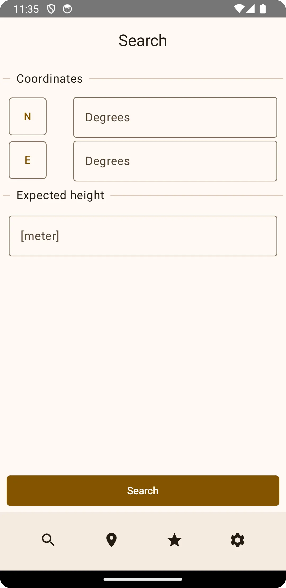
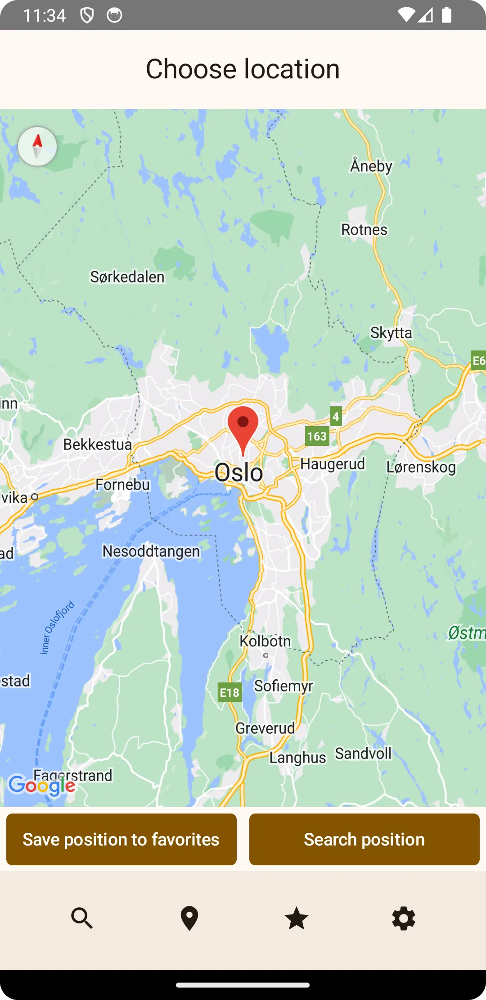
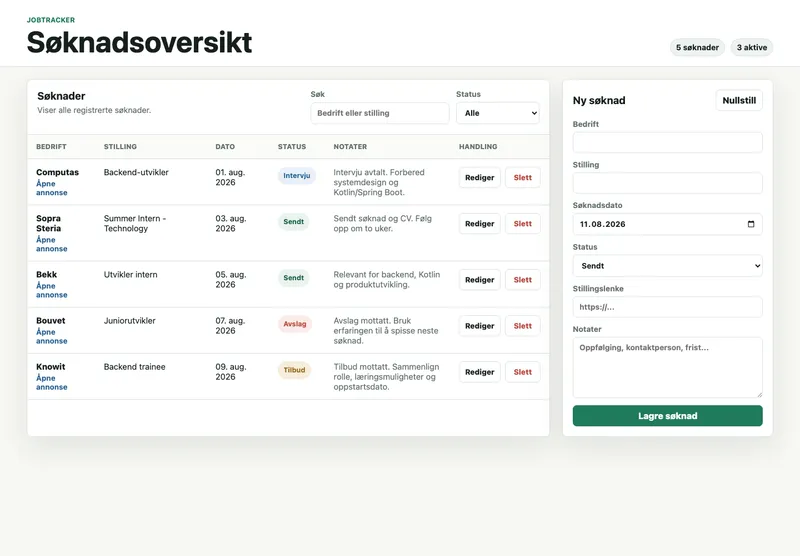

LiftOff
I IN2000 laget gruppen min en Android-app som samler værdata for rakettoppskytninger. Appen har kart, favorittsteder og lokal lagring.
Kotlin
Android Studio
Backendutvikler med bachelor i informatikk
Jeg lager backend- og appprosjekter med Kotlin, Spring Boot, PostgreSQL og Swift. Jeg fullførte bachelor i informatikk ved UiO våren 2026 og jobber som IT Manager i Radio Nova.
Fremhevet prosjekt
En webapp jeg laget for å holde oversikt over jobbsøknader. Backend er bygget med Kotlin, Spring Boot og PostgreSQL.


I IN2000 laget gruppen min en Android-app som samler værdata for rakettoppskytninger. Appen har kart, favorittsteder og lokal lagring.
En iOS-app jeg lager for å gjøre det enkelt å se hvor mye du har igjen hver måned. Her kan du samle budsjett, faste utgifter, sparing og investeringer på ett sted.

Jeg laget JobTracker for å holde orden på jobbsøknader og samtidig få mer erfaring med Kotlin og Spring Boot. Appen bruker PostgreSQL og har fem REST-endepunkter.
Koden er klar for deploy, men appen ligger ikke ute ennå
Jeg fullførte bachelor i Informatikk: Programmering og systemarkitektur ved UiO våren 2026. Der jobbet jeg blant annet med Java, Python, databaser, Git, systemdesign og datasikkerhet.
I Radio Nova har jeg ansvar for IT-drift, infrastruktur og verktøyene redaksjonen bruker. Fra Avarn Security og Forsvaret er jeg vant til å ta ansvar, jobbe strukturert og holde hodet kaldt når det haster.

Mål nå
Jeg ser etter min første faste jobb, men er også åpen for internship, sommerjobb og traineeprogram.
Kotlin, Java, Spring Boot, REST API
PostgreSQL, SQL, Room, SwiftData
SwiftUI, Jetpack Compose, Android
Git, Docker, GitHub, VS Code
Har du en backendstilling som kan passe, eller vil du høre mer om et av prosjektene mine? Send meg gjerne en e-post eller ta kontakt på LinkedIn.